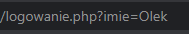

GET / POST
Metody GET i POST służą do pobieranie danych z formularza.
GET ujawnia nam dane w linku strony, ale POST je ukrywa.
Przykład metody GET:
Plik logowanie.php:
<form action="strona.php" method="GET">
<input type="text" name="imie">
<input type="submit">
</form>Formularz powinien zawierać:
- method - POST lub GET
- action - wskazuje na plik do którego ma nas przenieść jeżeli zatwierdzimy formularz
- input typu submit - tym przyciskiem zatwierdzamy formularz
Plik strona.php:
<?php
echo "<h1>Witaj ".$_GET['imie']." !</h1>";
?>Aby pobrać wartość metodą GET należy użyć zmiennej $_GET i odnieść się do klucza (name z inputu) $_GET['name-przycisku'].
Możemy umieścić kod tylko w 1 pliku
Jeżeli action w formularzu odwoluje sie do tego samego pliku w ktorym sie znajduje należy zostawić puste.
<form action="" method="GET">
<input type="text" name="imie">
<input type="submit">
</form>
<?php
if(isset($_GET['imie'])) echo "<h1>Witaj ".$_GET['imie']." !</h1>";
?>Instrukcja warunkowa sprawdza czy w formularzu zostało coś wpisane. Jeżeli nie byłoby tego warunku kod php wykonywałby sie po odświerzeniu strony a nie po zatwierdzeniu formularza.
Przykład metody POST:
<form action="" method="POST">
<input type="text" name="imie">
<input type="submit">
</form>
<?php
if(isset($_POST['imie'])) echo "<h1>Witaj ".$_POST['imie']." !</h1>";
?>Aby pobrać wartość metodą POST należy użyć zmiennej $_POST i odnieść się do klucza (name z inputu) $_POST['name-przycisku'].